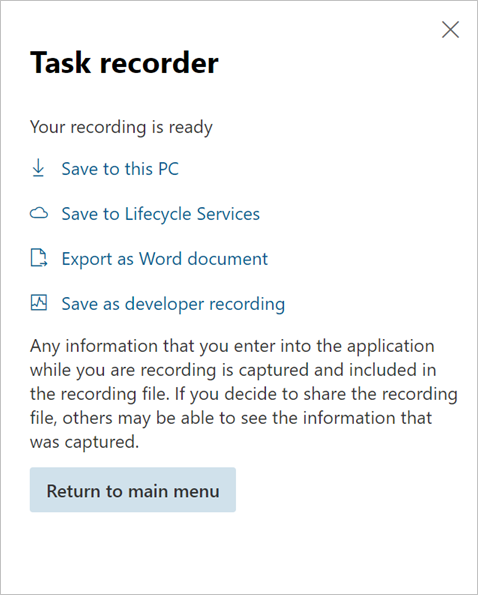

Aufgabenleitfäden in LCS speichern und erneut wiedergeben
Umgebungsdetails
Microsoft Dynamics 365 Human Resources, das über Microsoft Dynamics Lifecycle Services (LCS) bereitgestellt wurde
Abgang
Der Kunde/die Kundin möchte neue Aufgabenaufzeichnungen in seinem oder ihrem LCS-Projekt speichern und dann die gespeicherten Aufgabenleitfäden wiedergeben.
Auflösung
Folgen Sie diesen Schritten, um eine Aufgabenaufzeichnung in LCS zu speichern.
Melden Sie sich bei LCS an, und wählen Sie das Projekt aus.
Wählen Sie die Kachel Geschäftsprozessmodellierer aus.
Zeigen Sie die Seite in der „Aktualisierte BPM-Benutzeroberfläche” an.
Wählen Sie eine Bibliothek aus, und wählen Sie dann Kopieren aus.
Geben Sie einen Namen für das Modell des Geschäftsprozessmodellierers (BPM) an.
Melden Sie sich bei Human Resources von LCS an.
Geben Sie im Feld Suche den Text Hilfe ein. Lifecycle Services-Hilfe wird geöffnet.
Wählen Sie die Schaltfläche Aktualisieren für die Konfiguration der Lifecycle Services-Hilfe aus.
Ihre neue BPM-Bibliothek sollte angezeigt werden und aktiv sein.
Schließen Sie die Seite.
Erstellen Sie eine Aufgabenaufzeichnung.
Wenn Sie fertig sind, wählen Sie In Lifecycle Services speichern aus.

Wählen Sie die BPM-Bibliothek und -Knoten aus, um der Aufgabenaufzeichnung zu speichern.
Gehen Sie folgendermaßen vor, um einen Aufgabenleitfaden von LCS wiederzugeben.
- Starten Sie die Aufgabenaufzeichnung.
- Wählen Sie Von LCS aus öffnen aus.
- Wählen Sie die Bibliothek und den BPM-Knoten aus, die den gespeicherten Aufgabenleitfaden haben.
- Öffnen Sie den Aufgabenleitfaden.